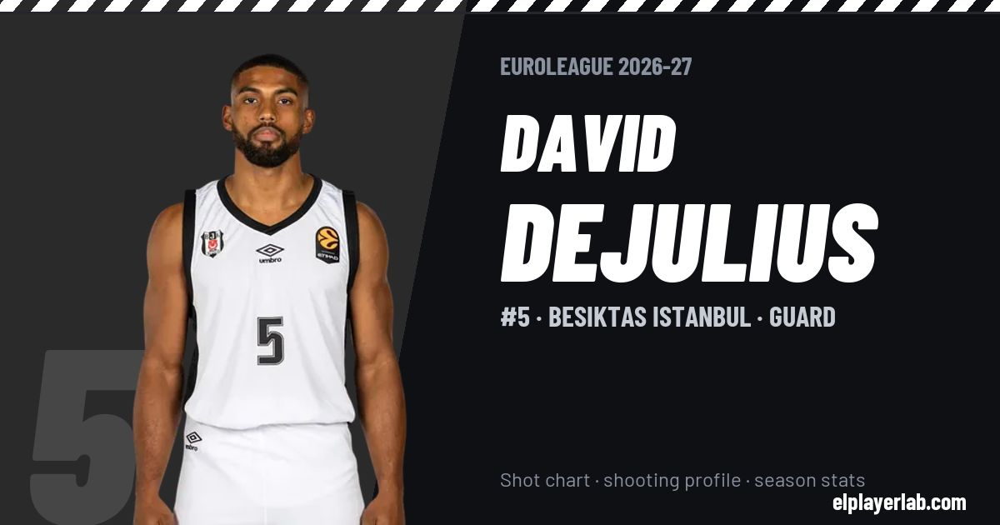

Besiktas Istanbul · Euroleague 2026-27
David Dejulius
#5 · Guard · Besiktas Istanbul · 2026-27 · 1 games · 4.0 pts · 1.0 reb · 4.0 ast a game

- Number
- 5
- Position
- Guard
- Height
- 183 cm
- Weight
- 95 kg
- Born
- 1999-08-09
- Country
- Slovakia
Career
- Besiktas (loan) 2026-2027
- UCAM Murcia 2025
- Bursaspor (loan) 2025
- Maccabi Tel Aviv 2024-2025
- Aris Thessaloniki 2024
- Göttingen 2024
- Lavrio 2023-2024
- Michigan (NCAA) 2018-2020
Euroleague Player Lab: shot charts, shooting profiles and season stats for every player, rebuilt after every game.